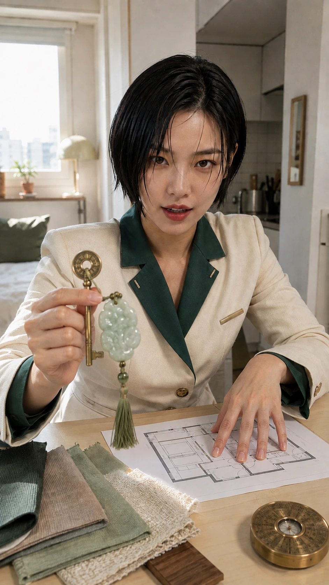

나 무슨 기운이야?
넘치는 기운 모자란 기운부터 내 생활에 옮기는 법까지 봅니다.
가볍게 훑고, 궁금한 항목부터 자세히 열어보세요.

넘치는 기운 모자란 기운부터 내 생활에 옮기는 법까지 봅니다.

나한테 붙는 색부터 내 생활에 옮기는 법까지 봅니다.

나한테 붙는 재질과 형태부터 내 생활에 옮기는 법까지 봅니다.

거리 두면 편한 색부터 내 생활에 옮기는 법까지 봅니다.

나한테 열리는 방향부터 내 생활에 옮기는 법까지 봅니다.

아침 세팅부터 내 생활에 옮기는 법까지 봅니다.